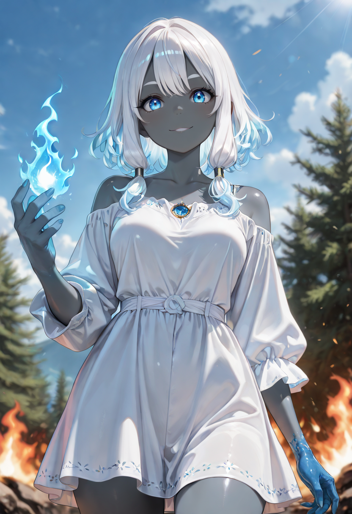
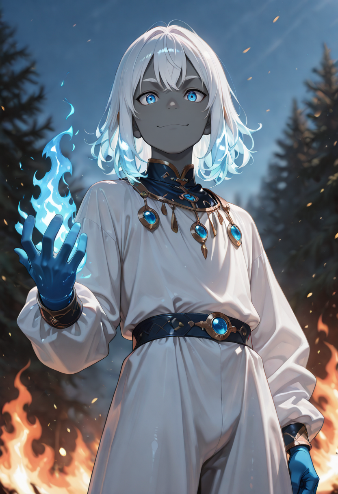
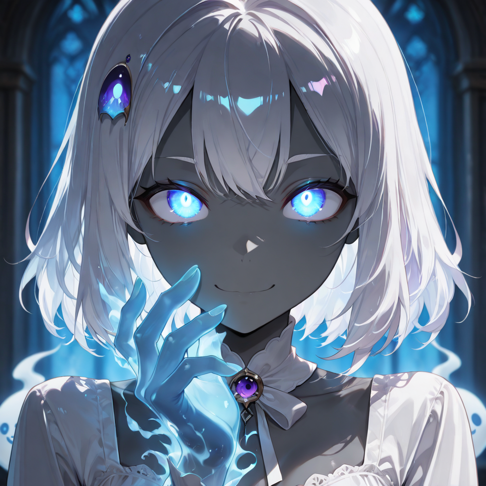

The Space Between
The Spirit Guide has learned to inhabit the transitional zone between the living and the wholly dead , a position that requires structural stability in a space most souls cannot survive. They navigate the spiritual plane the way surgeons navigate anatomy: with knowledge, intent, and no unnecessary motion.
Those who evolve into Spirit Guides were often people who, in life, held liminal roles: hospice workers, priests of passage rites, sailors who navigated by stars. They knew how to stand at thresholds. Now that threshold is their element.
In combat, they position themselves slightly removed from the main formation , not cowardly, but strategically. From the edge between engagement and withdrawal, they can see disruptions in the soul-field that others cannot. Status effects and spiritual attacks show themselves to the Guide half a second before they arrive , which is all the time they need.
Tactical Data
Soul Guide
BaseSpiritual Anchor
ActiveSoul Compass
PassiveGallery
